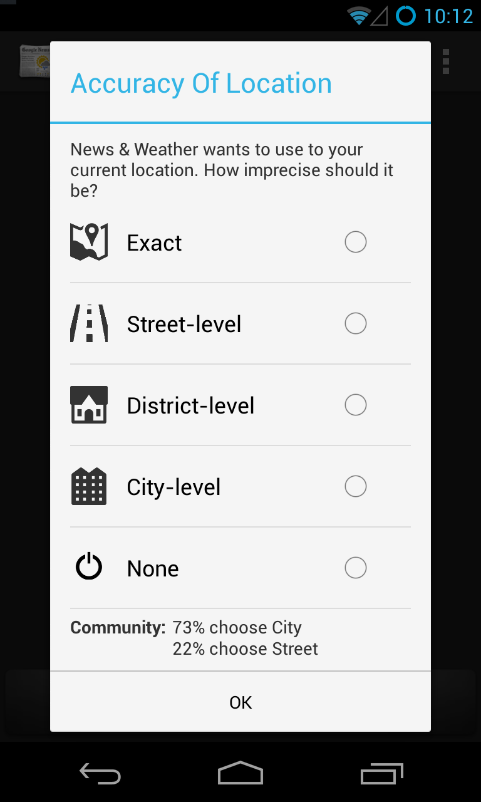
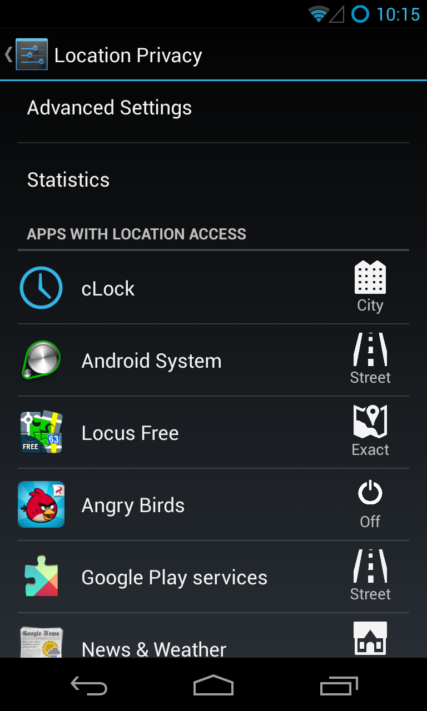
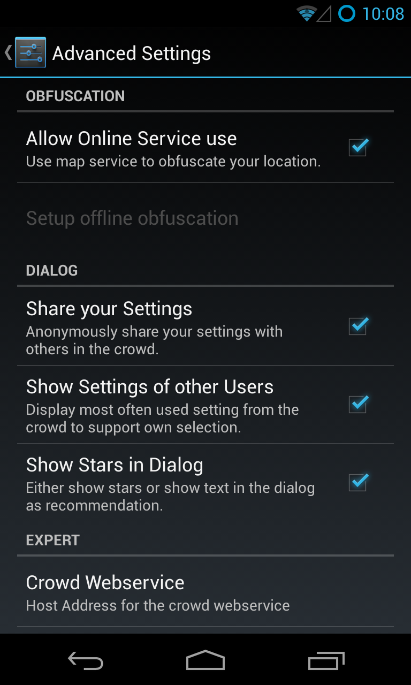
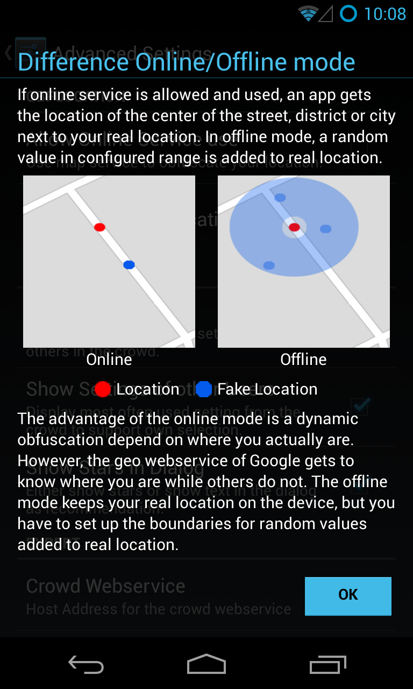
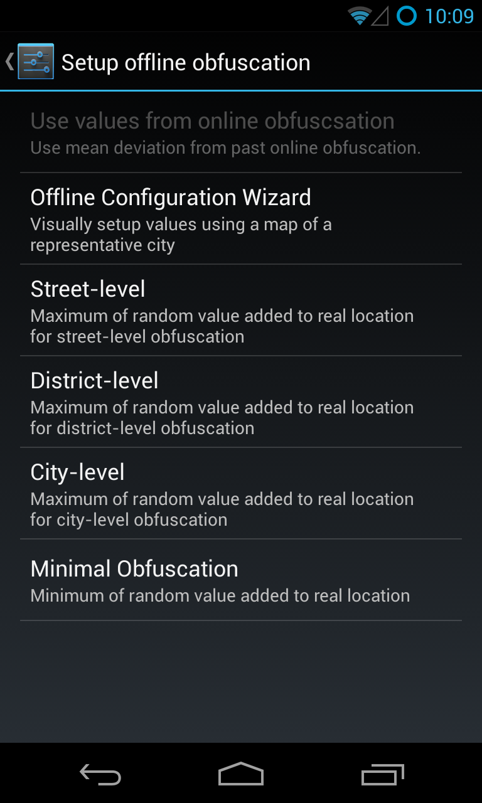
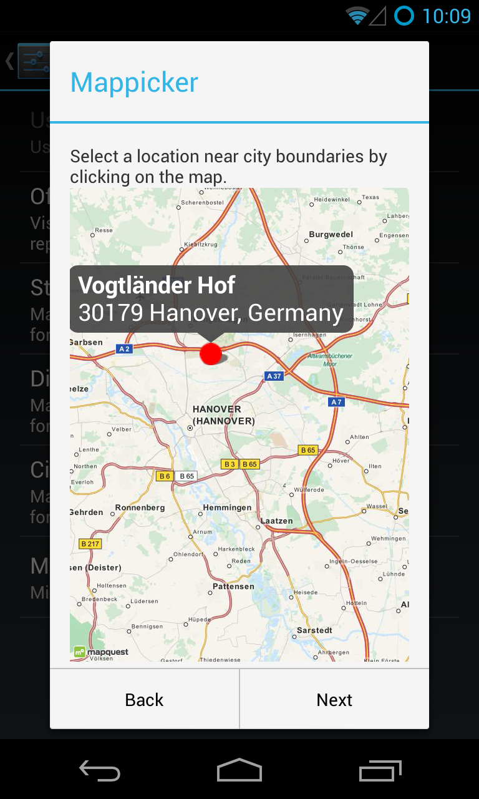
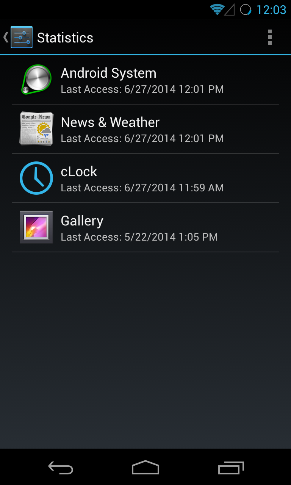
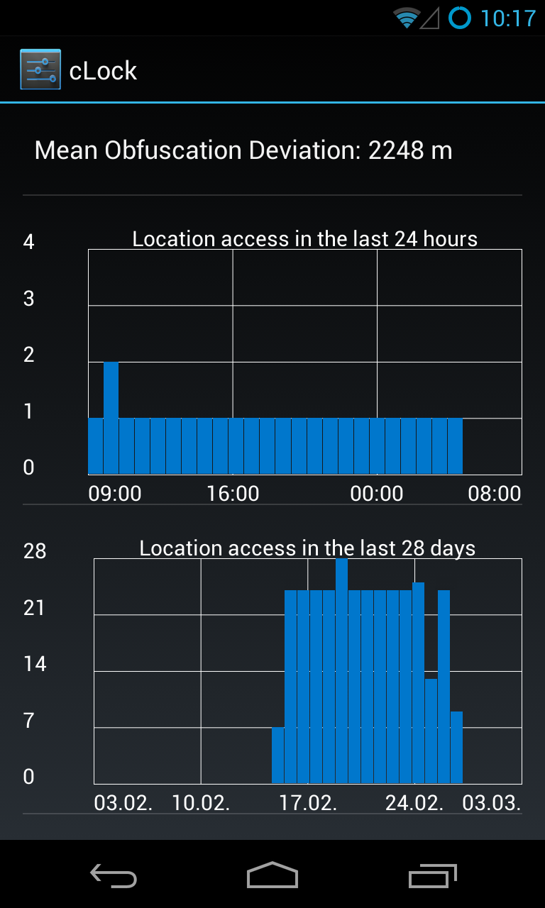

Usable Location Privacy for Android
Location privacy settings of Android (at least up to 4.4 Kitkat) are limited to the option of disabling location use in general, while Apple iOS (since version 6) allows it on a per-app basis. When using location-based services, users always reveal their exact location even to apps that do not need it. Weather forecast apps as well as navigation apps get the most exact location a device can determine. Mobile privacy research focuses on the recognition and prevention of the disclosure of private data including location, but does not extend to privacy in use cases where users do want to use/disclose their location. The increasing use of smartphones today entails an increasing use of location-based services as well. Users want to use these services, but have privacy concerns. As many location-based services do not require exact locations, user privacy can be increased by only disclosing location in such detail as required for the respective service to function.
The Usable Location Privacy extension for Android enables users to restrict the accuracy of revealed location data. Based on prior work and focus group studies' results the extension implements location obfuscation in an easy-to-use manner. Having control of location exactness allows its users to achieve the best possible privacy enhancement based on personal requirements. Unskilled users are supported in decision-making by a crowd-based service that shows what other users chose as level of location accurary for an app.
Features:
- Adds location obfuscation to Android
- Configuration of per-app accurary via pop-up dialog on first location use
- Online obfuscation method: Geo-data based location mapping to street/district/region
- Offline obfuscation method: Random location shifting with min/max distance
- Map-based configuration wizard to configure offline obfuscation distances
- Learn values for offline obfuscation from past online obfuscations
- Implements crowd-based support for decisions about accurary
- Location usage statistics show location usage behavior of each app
The extension bases on the Android Location Privacy Framework. It was designed and built within research and education at the Distributed Computing & Security Group, Leibniz Universität Hannover, Germany by Benjamin Henne and Christian Kater.
Screenshots
These screenshots show the interaction with the implemented features.
       Publications
- B. Henne, C. Kater, M. Smith: On Usable Location Privacy for Android with Crowd-Recommendations. In Trust and Trustworthy Computing, 7th International Conference, TRUST 2014, Heraklion, Crete, June 30 – July 2, 2014, Lecture Notes in Computer Science vol. 8564, Springer International Publishing. (paper|slides)
Support or Contact
Feel free to contact @bhenne.